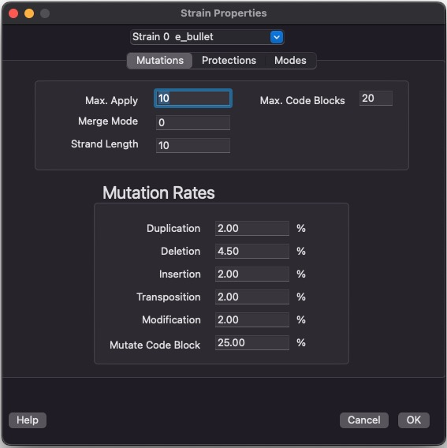
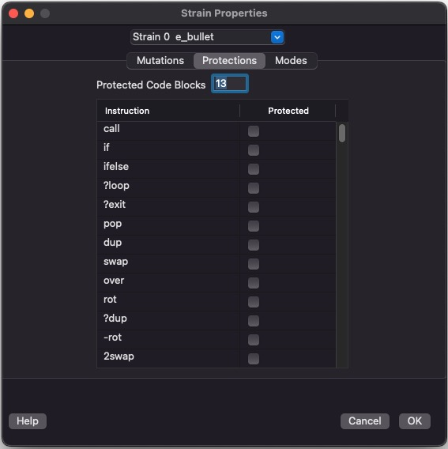

VOLVE 5.0
VOLVE 5.0
Strain Properties Dialog
Mutations Tab
This dialog lets you modify the strains in the current simulation file. This dialog is very similar to the Strain Profiles Dialog, but this screen is for modifying your simulation. It does not modify any strain profiles.
On this tab you customize the mutation rates for this strain.
Detailed information about these mutations available here.
Protections Tab
On this tab you customize the protected instructions and protected code blocks.
Protections are explained here.
Modes Tab
On this tab you customize the behavior of many important instructions.

Detailed information about these modes available here.
This is how the individual strains in your simulation are selected from: